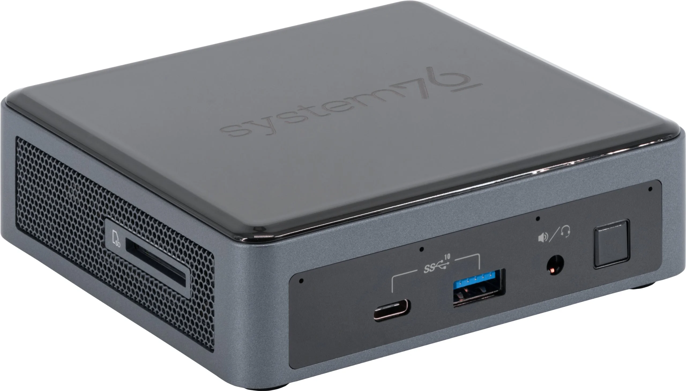

After 9 years, it's time to retire my old and faithful home Linux machine. It has served me extremely well, by far the longest time I've used a home computer without any replacements. The fans were starting to show their age, to the extent that the CPU fan sometimes needs a nudge to start after the machine has been off. While this can be fixed, I also wanted a somewhat faster machine with more memory.
I've long been keeping a curious eye on system76; they build and sell HW that was designed for Linux from the start. While my old machine - which was just a custom build - handled Linux fine over the years, it did exhibit some snags here and there (Bluetooth, for example). It would be nice not to deal with this and have HW that just works.
So I went ahead and ordered a "Meerkat" model, which is a really tiny 4.5"x4.5" box (with a comically large power adapter) that manages to pack 32 GiB of memory, a sizable SSD and a 4-core (8-thread) i5-1135G7 CPU. It came with Ubuntu 22.04 preinstalled and was very quick and easy to set up. I moved all my daily operations to this machine a couple of hours after unpacking it. Just the computer itself changed - it's still the same monitor, keyboard and mouse. I could finally use my Bluetooth earphones with it, without any issues.
It's about 33% faster than my older machine (at least for compiling the Go toolchain and medium-sized Rust projects), and it's nice to have twice as much memory and a larger SSD. I'm quite happy with it so far. It's not the cheapest option out there, but it is a "pay for high quality with minimum fuss" option.
Update 2024.11.02: I replaced this computer after two years. It's still working great, but was becoming a bit underpowered for my needs, especially because it lacks a GPU. Being pretty happy with System76, I went for a Thelio Mira with an i7-13700K CPI (16 Cores - 24 Threads 8P+8E), 64 GiB of memory and an inexpensive gaming-class Nvidia GPU.